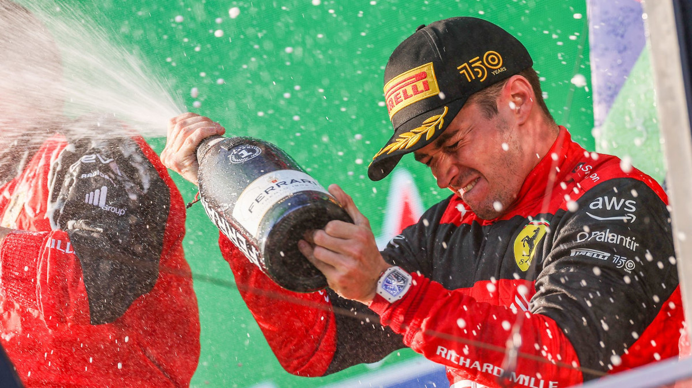
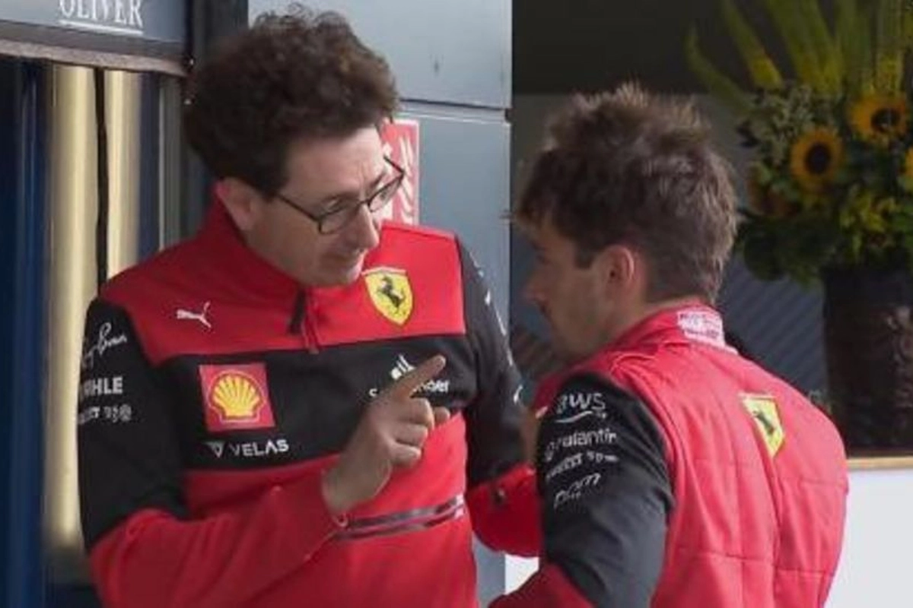

Charles Leclerc took pole position for the Bahrain Grand Prix. For the first time since the 2019 Brazilian Grand Prix, both Haas drivers got through into Q2, with Kevin Magnussen qualifying 7th and Mick Schumacher 12th. In the opening lap at turn 6, Alpine's Esteban Ocon touched the rear of Schumacher's car, spinning him round, and was penalised five seconds for the accident. AlphaTauri's Pierre Gasly caught fire and retired on lap 46. Leclerc won the Grand Prix ahead of teammate Carlos Sainz Jr., making it a 1–2 finish for Ferrari. Magnussen finished 5th, while the Red Bull cars of Max Verstappen and Sergio Pérez retired late in the race due to fuel issues.
Pérez took pole position for the first time at the Saudi Arabian Grand Prix, while Mercedes's Lewis Hamilton claimed 16th place after being knocked out in Q1 for the first time since the 2017 Brazilian Grand Prix. Only 18 drivers started the race, as Yuki Tsunoda's AlphaTauri broke down on the way to the grid after a suspected drivetrain issue, and Schumacher was withdrawn from the event after a crash in qualifying; he would return to racing in the next round. Williams's Nicholas Latifi hit the wall at the final corner on lap 16, while Alpine's Fernando Alonso, McLaren's Daniel Ricciardo, and Alfa Romeo's Valtteri Bottas retired after 38 laps due to technical problems. Verstappen won the race after a late overtake on Leclerc. Williams's Alexander Albon got a three-place grid penalty after the race for a collision with Aston Martin's Lance Stroll.
Leclerc won the Australian Grand Prix from pole position, set the fastest lap, and led every lap, getting the first grand slam for Ferrari since Alonso at the 2010 Singapore Grand Prix. Pérez and Mercedes's George Russell took second and third, respectively. Pérez's teammate Verstappen was running second before he retired on lap 38 due to fuel leaks causing a fire. Sainz spun out on the opening lap at turn 10 and Aston Martin's Sebastian Vettel, who made his season debut after missing the first two races as he tested positive for coronavirus with Nico Hülkenberg taking his place, crashed out in the opening stages at turn 4. Albon, who started last after he was disqualified from qualifying for failing to provide a one-litre fuel sample, finished 10th for Williams, pitting on the last lap after running 57 laps on hard tyres.
Verstappen took pole position for the Emilia Romagna Grand Prix sprint. Despite Leclerc overtaking him at the start, Verstappen recovered, using DRS to overtake him and win the sprint, ahead of Leclerc and teammate Pérez. Verstappen won Sunday's Grand Prix from pole position to achieve the second grand slam of his career, while Pérez finished in second to give Red Bull their first 1–2 finish since the 2016 Malaysian Grand Prix. Leclerc ran in third for the most of the race but spun on lap 53, falling to ninth and promoting McLaren's Lando Norris to the final podium place. Leclerc would recover to eventually finish in sixth position. The result promoted Red Bull to second in the Constructors' Championship, and Verstappen to second in the Drivers' Championship, with Leclerc's teammate Sainz suffering a second DNF in a row following a lap 1 collision with Daniel Ricciardo.
Leclerc led Sainz for a Ferrari front-row lock-out for the first edition of the Miami Grand Prix.[134] Behind them were the Red Bull drivers, Verstappen and Pérez, and Alfa Romeo's Bottas. Stroll and Vettel, who respectively qualified 10th and 13th, started the race from the pit lane after a fuel temperature issue. At the first corner on the opening lap, Verstappen overtook Sainz for second place and closed in on Leclerc, whom he passed for the lead on lap 9, as Leclerc struggled with the medium compound tyres. The race was neutralised on lap 41, as Norris's rear right tyre made contact with Gasly's front left, triggering a virtual safety car and then a safety car for five laps. Verstappen was pressured by Leclerc at the restart and defended his position to take the win. On lap 52, his teammate Pérez attempted to overtake Sainz into turn 1 but made a mistake and locked up. Vettel and Schumacher collided at lap 53, but no action was taken. Leclerc and Sainz finished second and third, respectively, while Pérez, who had temporarily suffered engine issues that cost him about 30 horsepower, and Russell made up the top five. After the race, Alonso was given two separate five-second penalties and finished outside of points. Magnussen had two separate incidents following the restart with Stroll, retiring on the last lap.
Leclerc took pole position for the Spanish Grand Prix, which he led until being forced on lap 27 to retire due to a turbo and MGU-H failure. Despite DRS issues, Verstappen won the race, with Pérez letting him by on lap 49, as they were on different strategies; Russell completed the podium. Sainz had a bad start that dropped him from third to fifth, and also spun at turn 4 on lap 7 due to wind gust, followed by Verstappen due to similar issues at the same tun on lap 9, but Sainz recovered from 11th to finish fourth, ahead of Hamilton, who also made a come back from 19th, after suffering a puncture in a racing incident with Magnussen at turn 4 after the start. For the first time in the season, Red Bull led Ferrari in the Constructors' Championship, while the Drivers' Championship standings switched from a 19-point Leclerc lead to a 6-point advantage for Verstappen.
Leclerc claimed pole position for the Monaco Grand Prix, in front of Sainz and Pérez. Two formation laps were run, 16 minutes after the scheduled start time. The start was aborted and started 50 minutes later. Due to a strategy error, Leclerc fell to fourth place behind Verstappen and Sainz, with Pérez leading the race. Ocon and Hamilton made contact on lap 18, the former getting a five-second time penalty. Five laps after Magnussen retired due to water pressure loss, Schumacher spun near the swimming pool section, splitting his car in two and causing the race to be stopped. The race was won by Pérez, followed by Sainz, Verstappen, Leclerc, and Russell.
Source: Wikipedia